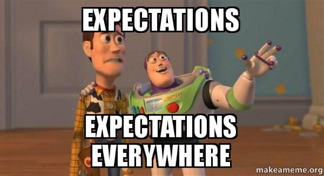

TLDR
You can a regress an outcome on a grouping variable plus any other variable(s) and the unadjusted and adjusted group means will be identical.
We can see this in a simple example using the
palmerpenguinsdata:
#remotes::install_github("allisonhorst/palmerpenguins")
library(palmerpenguins)
library(tidyverse)
library(gt)
# use complete cases for simplicity
penguins <- drop_na(penguins)
penguins %>%
# fit a linear regression for bill length given bill depth and species
# make a new column containing the fitted values for bill length
mutate(preds = predict(lm(bill_length_mm ~ bill_depth_mm + species, data = .))) %>%
# compute unadjusted and adjusted group means
group_by(species) %>%
summarise(mean_bill_length = mean(bill_length_mm),
mean_predicted_bill_length = mean(preds)) %>%
gt()| species | mean_bill_length | mean_predicted_bill_length |
|---|---|---|
| Adelie | 38.82397 | 38.82397 |
| Chinstrap | 48.83382 | 48.83382 |
| Gentoo | 47.56807 | 47.56807 |
This is because \(E[E[Y|X,Z]|Z=z]=E[Y|Z=z]\).
We can view a fitted value from the regression, \(E[Y|X,Z]\), as a random variable to help us see this.
Skip to the end to see the proof.

I’ll admit I spent many weeks of my first probability theory course struggling to understand when and why my professor was writing \(X\) versus \(x\). When I finally learned all the rules for expectations of random variables, I still had zero appreciation for their implications in my future work as an applied statistician.
I recently found myself in a rabbit hole of expectation properties while trying to write a seemingly simple function in R. Now that I have the output of my function all sorted out, I have a newfound appreciation for how I can use regressions – a framework I’m very comfortable with – to rethink some of the properties I learned in my probability theory courses.
In the function, I was regressing an outcome on a few variables plus a grouping variable, and then returning the group means of the fitted values. My function kept outputting adjusted group means that were identical to the unadjusted group means.
I soon realized that for what I needed to do, my grouping variable should not be in the regression model. However, I was still perplexed as to how the adjusted and unadjusted group means could be the same.
I created a very basic example to test this unexpected result. I regressed a variable from the new penguins data set, bill_length_mm, on another variable called bill_depth_mm and a grouping variable species. I then looked at the mean within each category of species for both the unadjusted bill_depth_mm and fitted values from my linear regression model for bill_depth_mm.
penguins %>%
# fit a linear regression for bill length given bill depth and species
# make a new column containing the fitted values for bill length
mutate(preds = predict(lm(bill_length_mm ~ bill_depth_mm + species, data = .))) %>%
# compute unadjusted and adjusted group means
group_by(species) %>%
summarise(mean_bill_length = mean(bill_length_mm),
mean_predicted_bill_length = mean(preds)) %>%
gt()| species | mean_bill_length | mean_predicted_bill_length |
|---|---|---|
| Adelie | 38.82397 | 38.82397 |
| Chinstrap | 48.83382 | 48.83382 |
| Gentoo | 47.56807 | 47.56807 |
I saw the same strange output, even in my simple example. I realized this must be some statistics property I’d learned about and since forgotten, so I decided to write out what I was doing in expectations.
First, I wrote down the unadjusted group means in the form of an expectation. I wrote down a conditional expectation, since we are looking at the mean of bill_length_mm when species is restricted to a certain category. We can explicitly show this by taking the expectation of a random variable, \(\mathrm{Bill Length}\), while setting another random variable, \(\mathrm{Species}\), equal to only one category at a time.
\(E[\mathrm{BillLength}|\mathrm{Species}=Adelie]\)
\(E[\mathrm{BillLength}|\mathrm{Species}=Chinstrap]\)
\(E[\mathrm{BillLength}|\mathrm{Species}=Gentoo]\)
More generally, we could write out the unadjusted group mean using a group indicator variable, \(\mathrm{Species}\), which can take on all possible values \(species\).
\(E[\mathrm{BillLength}|\mathrm{Species}=species]\)
So that’s our unadjusted group means. What about the adjusted group mean? We can start by writing out the linear regression model, which is the expected value of \(\mathrm{BillLength}\), conditional on the random variables \(\mathrm{BillDepth}\) and \(\mathrm{Species}\).
\(E[\mathrm{BillLength}|\mathrm{BillDepth},\mathrm{Species}]\)
When I used the predict function on the fit of that linear regression model, I obtained the fitted values from that expectation, before I separated the fitted values by group to get the grouped means. We can see those fitted values as random variables themselves, and write out another conditional mean using a group indicator variable, just as we did for the unadjusted group means earlier.
\[E[E[\mathrm{BillLength}|\mathrm{BillDepth},\mathrm{Species}]|\mathrm{Species}=species]\]
My table of unadjusted and adjusted Bill Length means thus showed me that:
\[E[E[\mathrm{BillLength}|\mathrm{BillDepth},\mathrm{Species}]|\mathrm{Species}=species] \\ = E[\mathrm{BillLength}|\mathrm{Species}=species]\]
Or, in more general notation:
\[E[E[Y|X,Z]|Z=z] = E[Y|Z=z]\]
Is it true?! Spoiler alert – yes. Let’s work through the steps of the proof one by one.
Proof set-up
Let’s pretend for the proof that both our \(Y\) (outcome), \(X\) (adjustment variable), and \(Z\) (grouping variable) are categorical (discrete) variables. This is just to make the math a bit cleaner, since the expectation of a discrete variable (a weighted summation) is a little easier to show than the expectation of a continuous variable (the integral of a probability density function times the realization of the random variable).
A few fundamental expectation results we’ll need:
Conditional probability
\(P(A|B) = \frac{P(A ∩ B)}{P(B)}\)
Partition theorem
\(E[A|B] = \sum_Ba \cdot P(A=a|B=b)\)
Marginal distribution from a joint distribution
\(\sum_A\sum_Ba\cdot P(A=a,B=b) = \sum_Aa\sum_B\cdot P(A=a,B=b) = \sum_Aa\cdot P(A=a)=E[A]\)
Step-by-step Proof
Click on the superscript number after each step for more information.
\(E[E[Y|X,Z]|Z=z]\)
\(=E[E[Y|X,Z=z]|Z=z]\) 1
1 Because we’re making our outer expectation conditional on \(Z=z\), we can also move \(Z=z\) into our inner expectation. This becomes obvious in the penguins example, since we only use the fitted values from one category of species to get the adjusted group mean for that category.
\(=\sum_{X}E[Y|X=x,Z=z]\cdot P(X=x|Z=z)\) 2
2 We can rewrite \(E[Y|X,Z=z]\) as the weighted summation of all possible values \(X\) can take. \(E[Y|X,Z=z]\) will only ever be able to take values of \(X\) that vary over the range of \(x\), \(E[Y|X=x,Z=z]\) since our value \(z\) is already fixed. We can weight each of these possible \(E[Y|X=x,Z=z]\) values by \(P(X=x|Z=z)\), since that’s the probabilty \(X\) will take value \(x\) at our already-fixed \(z\). Thus, we can start to find \(E[E[Y|X,Z=z]|Z=z]\) by weighting each \(E[Y|X=x,Z=z]\) by \(P(X=x|Z=z)\) and adding them all up (see Partition Theorem).
\(=\sum_{X}\sum_{Y}y P(Y=y|X=x,Z=z)\cdot P(X=x|Z=z)\) 3
3 We can get the expectation of \(Y\) at each of those possible values of \(X\) by a similar process as step 2 (weighting each \(y\) by \(P(Y=y|X=x, Z=z)\).
\(=\sum_{X}\sum_{Y}y \frac{P(Y=y,X=x,Z=z)}{P(X=x,Z=z)}\cdot \frac{P(X=x,Z=z)}{P(Z=z)}\) 4
4 By the Law of Conditional Probability, we can rewrite our conditional probabilities as joint distributions.
\(=\sum_{X}\sum_{Y}y \frac{P(Y=y,X=x,Z=z)}{P(Z=z)}\) 5
5 The denominator of the first fraction cancels out with the numerator of the second fraction.
\(=\sum_{Y}y\sum_{X}\frac{P(Y=y,X=x,Z=z)}{P(Z=z)}\) 6
6 We can switch the summations around so that \(y\) is outside the summation over all values of \(X\). This lets us get the joint distribution of only \(Y\) and \(Z\).
\(=\sum_{Y}y\frac{P(Y=y,Z=z)}{P(Z=z)}\) 7
7 This is a conditional expectation, written in the form of a joint distribution.
\(=\sum_{Y}y P(Y=y|Z=z)\) 8
8 By the Partition Theorem.
\(=E[Y|Z=z]\) 9
9 Rewriting the previous equation as an expectation.
So, we’ve proved that:
\(E[E[Y|X,Z]|Z=z] = E[Y|Z=z]\)
which, thankfully, means I have an answer to my function output confusion. It was a lightbulb moment for me to realize I should think of an inner expectation as a random variable, and all the rules I learned about conditional and iterated expectations can be revisited in the regressions I fit on a daily basis.
Here’s hoping you too feel inspired to revisit probability theory from time to time, even if your work is very applied. It is, after all, a perfect activity for social distancing! 😷
References
Gorman KB, Williams TD, Fraser WR (2014) Ecological Sexual Dimorphism and Environmental Variability within a Community of Antarctic Penguins (Genus Pygoscelis). PLoS ONE 9(3): e90081. https://doi.org/10.1371/journal.pone.0090081